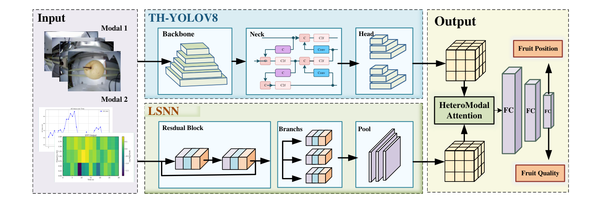
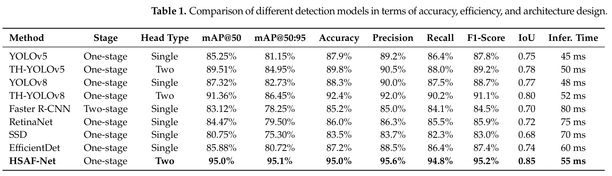

研究导读 · Electronics · 2026
多模态融合与水果品质评估
Heterogeneous SNN-ANN Multimodal Fusion Framework for Comprehensive Fruit Quality Assessment
Electronics, 15(16), 3613 (2026)
研究问题
单靠 RGB 外观难以判断糖度与内部损伤；近红外序列和图像的表示形式又不同，固定拼接或平均难以适应样本间的模态差异。
核心方法
HSAF-Net 以 LSNN 提取近红外光电压序列的内部特征，以双头 TH-YOLOv8 分别处理整体外观与局部缺陷。HMA 先对齐异构特征，再结合模态内注意力、双向跨模态交互和样本级门控完成分级。
方法步骤
- Synchronized sensing
同步采集同一梨果的近红外光电压序列与多视角 RGB 图像。
- LSNN + TH-YOLOv8
分别提取内部品质信息与整体外观、局部缺陷特征。
- HMA
对齐稀疏时间特征与稠密视觉特征，按样本动态融合。
- Edge grading
在 Ascend Atlas 200DK A2 上完成品质分级与检测输出。
代表性发现
内部光电压响应与外部 RGB 外观具有互补性，模态专用编码器与动态注意力融合可提高受控条件下的梨果品质评估表现。
科学意义
在论文的受控梨果实验中，近红外序列与 RGB 图像提供互补信息，模态专用编码和融合连接内部品质评估与表面缺陷检测。
科研图


HSAF-Net 双模态框架
原文图 1 · 原文图 1：TH-YOLOv8 外部检测、LSNN 内部感知与 HMA 融合。
保留模态各自的编码优势，再学习内外部品质证据的互补关系。
图源：Electronics, 15(16), 3613 (2026)。 © 2026 作者。 CC BY 4.0.
图像复用权待核验


完整系统性能对比
原文表 1 · 原文表 1：对比检测方法的准确率、检测指标与推理时间。
95.2% 分类准确率与 55 ms 推理延迟对应完整系统的报告结果。
图源：Electronics, 15(16), 3613 (2026)。 © 2026 作者。 CC BY 4.0.
图像复用权待核验
适用条件
先看图 1 的双分支，再比较表 1 的完整系统与表 4 的融合策略消融。表 1 的准确率为 95.2%，表 4 的 HMA 准确率为 95.0%；表 3 的能耗属于理论估算。当前证据限于受控梨果数据，不能直接推及所有水果或跨季节部署。